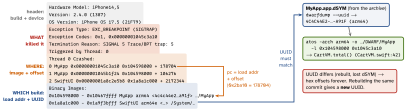

build · folio
In one line: A crash report says what killed the process (Exception Type +
Termination Reason), where (the crashed thread’s backtrace of
image + offset), and which build (the UUID of every binary image).
Symbolication turns offsets into function + file:line using the dSYM whose
UUID matches — no matching dSYM, no names, ever.
Download PDF Print view LaTeX source


Exception type → cause → first move
| Type (signal) | Meaning | First move |
|---|---|---|
EXC_BAD_ACCESS (SIGSEGV / SIGBUS) | bad pointer: freed object, unowned, unsafe pointer; KERN_INVALID_ADDRESS | Zombies, ASan |
EXC_BREAKPOINT (SIGTRAP) | Swift trap: ! on nil, index out of range, fatalError, precondition, as!, overflow | top app frame; the Fatal error msg |
EXC_CRASH (SIGABRT) | abort(): uncaught NSException, C assert | Last Exception Backtrace |
EXC_CRASH (SIGKILL) 0x8badf00d | watchdog: main thread blocked at launch / resume / suspend | main stack; I/O off main |
0xdead10cc | held a file or SQLite lock while being suspended | beginBackgroundTask, release first |
| no crash log | jetsam (memory limit) | iOS 27 MetricKit .memoryException |
How it works
- Reports are JSON
.ips(iOS 15+). Always read in order: exception type → termination reason → crashed thread (main?) → first frame in your image. - dSYM = DWARF debug info split out of the stripped binary (
DEBUG_INFORMATION_FORMAT = dwarf-with-dsym); the archive keeps it. Find one by UUID:mdfind "com_apple_xcode_dsym_uuids == <UUID>". - Bitcode is gone (deprecated in Xcode 14): the App Store no longer recompiles, so the archive’s dSYM is the shipped one. Old bitcode builds needed Download dSYMs from App Store Connect.
- Where crashes arrive: Xcode Organizer (opt-in users, delayed, auto-symbolicated if the dSYM is known) · Crashlytics/Sentry (upload dSYMs from a build phase or CI) · MetricKit.
- MetricKit (iOS 27): one
MetricManagerinstance;diagnosticReportsis anAsyncSequenceofDiagnosticReport(Codable);result:.crash·.hang·.cpuException·.diskWriteException·.appLaunch·.memoryException(memory-limit kills). Before:MXMetricManager+ subscriberdidReceive(_:)— deprecated in 27.2. Call stacks come unsymbolicated. Diagnostics arrive immediately (iOS 15+), metrics at most daily.
Reproduce and triage
- Memory crashes: scheme → Diagnostics → Zombie Objects (message to a freed object), Address Sanitizer (use-after-free, overflow), Thread Sanitizer (races; not with ASan), Main Thread Checker.
- Hangs/watchdog: Time Profiler, Hangs instrument. OOM: Allocations, Memory Graph, downsample images, drop caches on memory warning.
Example
let metrics = MetricManager() // iOS 27: hold ONE instance
Task {
for await report in metrics.diagnosticReports { // never throws
switch report.result {
case .crash, .hang, .memoryException:
send(report) // Codable; stacks unsymbolicated
default: break
}
}
}dwarfdump --uuid MyApp.app/MyApp MyApp.app.dSYM # equal?Traps
- Swift traps are not SIGABRT: on arm64 they are
EXC_BREAKPOINT (SIGTRAP)(EXC_BAD_INSTRUCTION/SIGILL on Intel simulators). - “No crash log” ≠ no crash — jetsam kills leave only a
JetsamEventlog. 0x8badf00dis not a bug at the top frame: it is where the main thread was when time ran out.- Optimized builds inline code: a frame may show the caller’s line or skip callees.
- Never trust “I rebuilt the same commit” — different UUID, dSYM useless.
Remember
“What · Where · Which build.” Type tells the category, the backtrace the place, the UUID the dSYM. 8badf00d = too slow, dead10cc = lock on suspend.